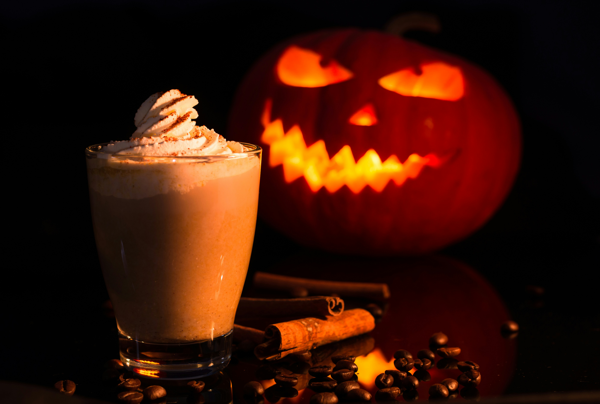

Pumpkin Spice Latte Recipe

Description
A pumpkin spice latte is a cozy, seasonal espresso-based drink that combines
rich coffee with steamed milk, pumpkin purée, warm autumn spices (like
cinnamon, nutmeg, and cloves), and a touch of sweetness. It’s typically
topped with whipped cream and a sprinkle of pumpkin pie spice, making it a
comforting and festive beverage that’s especially popular during the fall.
Ingredients
- 2 shots of espresso (or 1/2 cup strong brewed coffee)
- 1 cup milk (dairy or non-dairy)
- 2 tablespoons pumpkin purée
- 1–2 tablespoons sugar or sweetener of choice
-
1/2 teaspoon pumpkin pie spice (or cinnamon, nutmeg, and cloves blend)
- 1/4 teaspoon vanilla extract
- Whipped cream (optional, for topping)
- Pumpkin pie spice (for garnish)
Steps
- Brew 2 shots of espresso or prepare 1/2 cup of strong coffee.
-
In a small saucepan, heat the milk, pumpkin purée, sugar, and pumpkin
pie spice over medium heat. Stir until hot but do not boil.
- Remove from heat and stir in the vanilla extract.
-
Whisk or froth the mixture until it becomes creamy and slightly foamy.
- Pour the hot espresso or coffee into a mug.
- Top with the pumpkin milk mixture and stir gently.
-
Optional: Add whipped cream and a sprinkle of pumpkin pie spice for
garnish.
Go back to the homepage